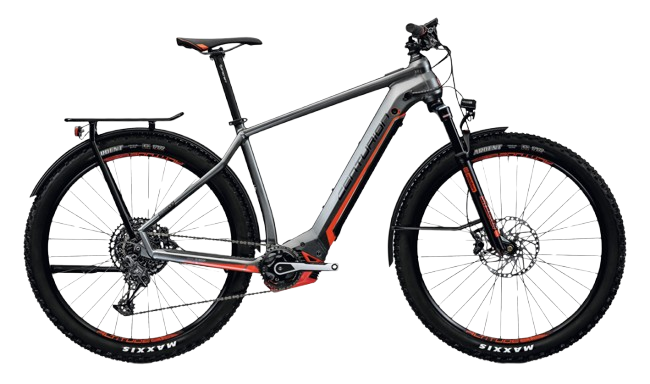
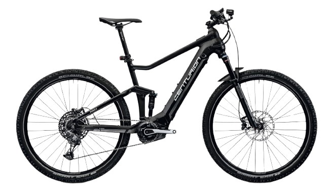
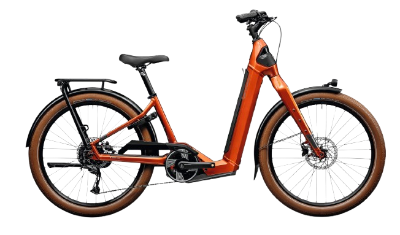

Wartung & Inspektion
Regelmäßige Wartung für zuverlässige Funktion, Sicherheit und lange Lebensdauer deines E-Bikes.
Radologe
Radsport & Werkstatt in Stuttgart
Persönliche Beratung, zuverlässiger Service und passende Lösungen für dein E-Bike. Wir begleiten dich von der Wartung über Reparaturen bis zur Auswahl des passenden Modells.
Nicht nur Technik, sondern Beratung, die zu deinem Einsatzbereich und deinem Rad passt.
Regelmäßige Wartung für zuverlässige Funktion, Sicherheit und lange Lebensdauer deines E-Bikes.
Fachgerechte Reparaturen an E-Bikes – abgestimmt auf Zustand, Nutzung und technische Anforderungen.
Persönliche Einschätzung zu Nutzung, Komponenten, Systemen und sinnvollen Lösungen rund ums E-Bike.
Unterstützung bei der Auswahl eines passenden E-Bikes – individuell statt pauschal.
Drei Beispiele aus dem Centurion Sortiment – für unterschiedliche Einsatzzwecke und mit persönlicher Beratung bei uns vor Ort.
Alle Centurion Modelle ansehen →
Centurion
Sportliches E-MTB Hardtail für dynamische Touren und vielseitigen Einsatz mit kraftvollem Bosch-Antrieb.

Centurion
Vielseitiges E-Bike für Touren, Alltag und leichte Offroad-Strecken – komfortabel, robust und flexibel einsetzbar.

Centurion
Komfortables E-Bike für Alltag und Stadt – mit tiefem Einstieg, aufrechter Sitzposition und zuverlässigem Bosch-Antrieb für entspanntes Fahren.
Verkauf und Partnerschaften sind das eine – Service für Kundenräder das andere.
Nach deinen Angaben werden Wartung und Reparaturen markenübergreifend durchgeführt. Das ist ein starker Vorteil für die Website, weil Kunden sofort verstehen: Sie können auch mit einem E-Bike einer anderen Marke zu euch kommen.
E-Bikes unterscheiden sich stark in Nutzung, Geometrie, Ausstattung und System.
Nicht jedes E-Bike passt zu jedem Alltag. Entscheidend sind Strecke, Sitzposition, Einsatz und Fahrgefühl.
Gute Beratung heißt auch, Systeme und Unterschiede so zu erklären, dass sie im Alltag nachvollziehbar bleiben.
Wer das passende E-Bike wählt und sauber warten lässt, hat länger Freude daran und fährt zuverlässiger.
Ob Kaufinteresse, Wartung oder Reparatur: Melde dich bei uns und lass dich persönlich beraten.